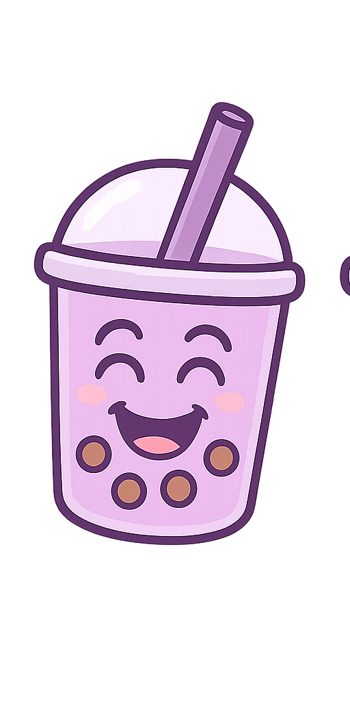
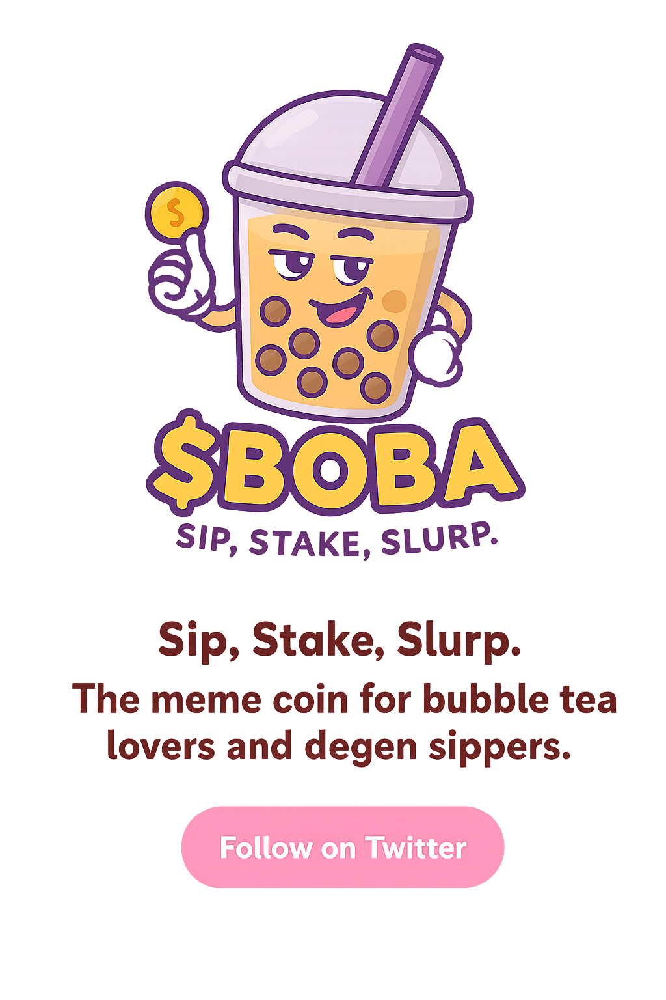
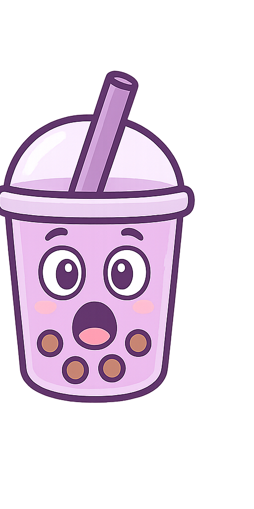
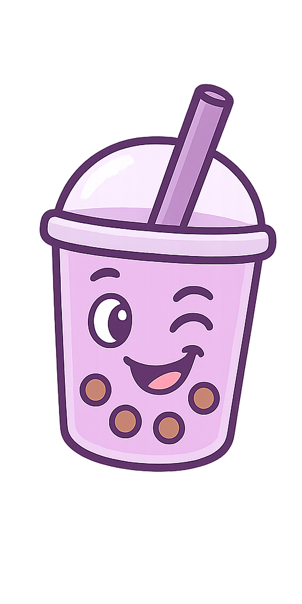

 $BOBA is more than just a meme coin — it’s your digital bubble tea buddy. Made for tipping friends, spreading joy, and sharing good vibes across the crypto universe. Imagine handing your pals a sweet sip of $BOBA every time they make you smile. That’s the spirit we bring!
 We believe memes and good times are just the beginning. As the $BOBA community grows, so will its purpose — with future plans for real utilities, exclusive perks, staking rewards, and fun ways to earn by simply being part of the bubble tea gang.
 $BOBA is launching soon on Solana. Get ready to sip, stake, and slurp with the friendliest meme coin on the blockchain. Sip, Stake, Slurp — $BOBA is here to make your crypto taste better.